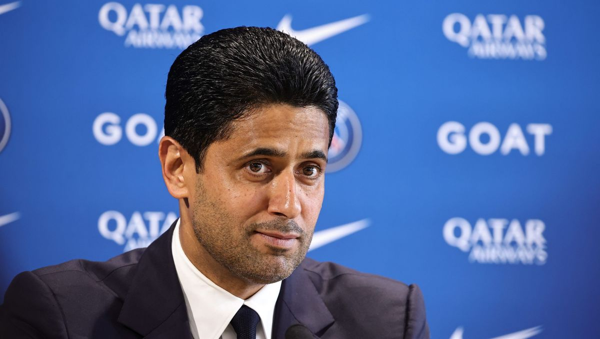

Né le 12 novembre 1973, à Doha, N.A.K. est un homme d'affaires qatari et président du PSG depuis 2011, année du rachat du club par QSI(Qatar Sports Investment) dont il est également le président.
Ancien joueur de tennis professionnel et passionné de sports depuis sa jeunesse,
Nasser a su rapidement s'imposer comme une des plus importantes figures de l'histoire
du Paris SG.
Il est apprécié par beaucoup de supporters de par ses choix
concernant le marché des transferts, et ce dès son arrivée. Au cours de son "règne" au
sein du PSG, il donne au club un poids important sur la scène européenne, grâce aux grands
moyens financiers employés pour améliorer l'effectif ainsi que les infrastructures.
Il est aujourd'hui reconnu comme une personne influente et
très puissante dans le monde du football.